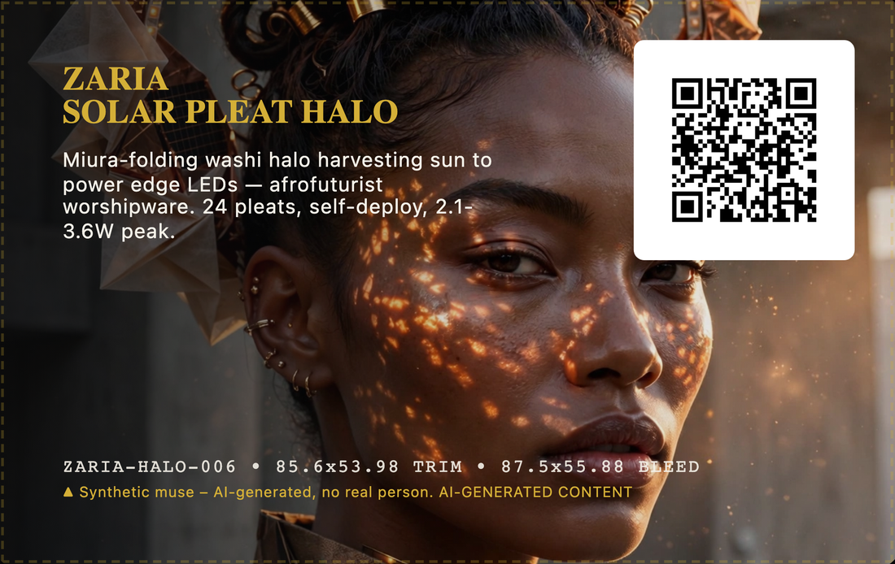
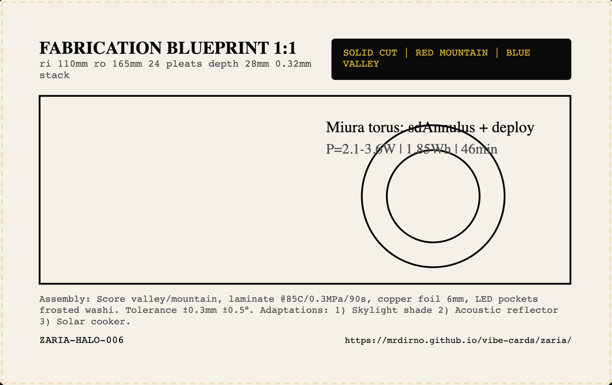

What it is
A halo. A ring about 33 cm across that sits on your head, folded from paper and standing 28 mm deep. Closed, the whole thing is a stack a third of a millimetre thick. Pull it open and twenty-four pleats rise at once.
The paper is washi — Japanese paper made from kozo, the inner bark of the paper mulberry. Its fibres are long, so a sheet weighing 45 grams per square metre is still hard to tear. A trace of konjac starch stiffens it.
On the outer pleats sit thin, bendable solar cells, wired to a strip of copper foil 6 mm wide that carries the current down to a small battery and the lights at the rim.
- RING
- 110 mm inner radius · 165 mm outer · 28 mm deep
- PLEATS
- 24 · fold angle 68°
- CLOSED
- 0.32 mm — the whole ring, flat
- PAPER
- 45 gsm kozo washi with 1% konjac starch
- WIRING
- 6 mm copper foil strip
- BATTERY
- 3.7 V, 500 mAh — that is 1.85 watt-hours
- CUTS
- solid lines, 0.25 mm
- FOLDS
- red dashed = mountain · blue dashed = valley
- TABS
- 5 mm semicircle + 3 mm square
- LICENCE
- MIT
One pull opens all of it
This is the good part, and it is why the pattern was chosen rather than drawn.
A Miura fold is named after Koryo Miura, an astrophysicist who worked out how to fold a flat sheet so that pulling two opposite corners opens the whole thing in one motion. Every crease moves together. There is nothing to unlatch and nothing to seize.
He designed it for spacecraft. A solar array folded this way packs flat for launch and deploys on a single pull, with no hinges to jam in vacuum.
So putting solar cells on a Miura fold is not a metaphor here — it is the pattern doing its original job, at the size of a head instead of a satellite.
The reason it works is the offset. Look at the drawing at the top: each row of parallelograms is shifted sideways against the row above.
That shift means a fold cannot close without its neighbours closing too, so the sheet has exactly one way to move. A grid of squares would collapse in any direction and hold no shape at all.
What the sun actually gives you
The package says 3.6 watts at peak, falling to 2.1 watts once folded. Here is where those come from, because the second number is not a measurement.
THREE ASSUMPTIONS, MULTIPLIED
- CELLS
- assumed 12% efficient, flexible CIGS — a thin-film solar cell you can bend
- PAPER
- assumed 15% of the light lost in the washi over the cells
- WIRING
- assumed 10% lost between cell and battery
3.6 W × 0.85 × 0.90 gives about 2.75 W. The package prints 2.1 W, so something further is being taken off that it does not name — most likely that not every pleat faces the sun at once, which is true of any ring.
For scale: 2.1 watts would fill that 1.85 watt-hour battery in a bit under an hour of direct sun, if nothing else were drawing on it. That is a real, modest, useful amount of power — enough for edge lights, not enough for anything warm.
But no cell in this design has ever been tested. Change the first assumption from 12% to 9% and every number on this page moves with it. An output figure can never be better than the guesses it is built from, and all three of these are guesses in the package's own words.
How to build it
AN AFTERNOON FOR THE PAPER. THE ELECTRONICS ARE A SEPARATE DAY.
-
Print the sheet at true scale
The cutting files ship with the card, not on it: an SVG and a DXF, both drawn 1:1 in millimetres. Print at 100% / “Actual size”.
“Fit to page” is the setting that ruins this. A few percent is invisible on paper and fatal in a fold pattern, where every crease has to meet its neighbour.
-
Check the ruler before you cut anything
There is a 100 mm ruler on the sheet for exactly this moment. Put a real ruler on it. It must measure 100 mm. Thirty seconds against a sheet of washi and an afternoon.
-
Cut only the solid lines
Solid black at 0.25 mm is a cut, all the way through. Everything dashed is a fold and must not be cut. Cut the tabs too: a 5 mm semicircle and a 3 mm square, which is how the ring closes on itself.
-
Score the mountains and the valleys separately
Red dashed is a mountain — the crease rises towards you. Blue dashed is a valley — it falls away. Score each set from the side it folds towards, so turn the sheet over between them. Getting one crease backwards is the single failure that stops a Miura fold moving.
-
Collapse it in one motion
Do not fold pleat by pleat. Take two opposite corners and push them gently together; the whole pattern should fold itself. If it fights you, a crease is the wrong way round — find it before forcing anything, because washi creases once and remembers.
-
Close the ring, then wire it
Seat the semicircular tab into its square and the strip becomes a ring. Only now lay the copper foil and the cells along the outer pleats, and keep the foil on the pleats rather than across a crease — foil that bridges a fold is the joint that will fail first.
What you already have
Card 006 did not pay for most of what it needs. It inherits:
- FROM 001
- the 1:1 template that survives a real printer, and the printed ruler that proves the scale
- FROM 004
- the living hinge — a scored fold that is also the joint, no pin and no pivot
- FROM 005
- the habit of folding structure from one continuous strip rather than assembling panels
What it leaves behind is the one-motion deploy: a surface that packs flat and opens on a single pull. Any later card that needs something to unfold by itself gets that for free, and does not have to work out the offset again.
Reading the sheet
FOUR MARKS, AND THEY MEAN DIFFERENT THINGS
The swatches are drawn on white because that is where you will meet them — on your own printout, in the sheet’s own black, red and blue.
What is drawn and what is measured
Nothing here has been built or tested. This is where that matters, in order of how much it would change what you get.
The power figure is three guesses multiplied. Cell efficiency, light lost in the paper, current lost in the wire — each is an assumption in the package’s own notes, and the output is their product. It reads like a measurement and is not one.
No cell was ever tested. The package says plainly that no IV sweep was performed — that is the standard measurement that tells you what a solar cell actually produces, by sweeping the current and reading the voltage. Without it, 12% is a datasheet number for a class of cell, not for these.
The fold life is estimated. The claim is more than a thousand open-and-close cycles. That was not run. Washi is unusually good at this, which is why it was chosen, but nobody has folded one a thousand times.
The light pattern was never measured. The caustics — the bright shapes light makes when it passes through a folded translucent surface, which is much of the point of the object — were not measured in a lab.
The assembly time is borrowed. The 38 minutes comes from similar builds, not from building this one.
The front of the card is a generated render. It shows a person’s face. No such person exists, nobody was photographed, and the card itself prints a line saying so. You cannot tell that by looking, which is exactly why it is written here on the page a stranger reads.
The back of the card is a schematic, not a cutting file. At 85.6 mm across it could not be one. The 1:1 SVG and DXF ship with the package.
None of this makes the design wrong. It makes it untested, which is a different thing, and the difference is worth a whole section on the page a stranger reads.
Licence
This card is MIT. Do what you like with it, including sell it, as long as the copyright line travels with it. Cards 001, 002 and 004 in this book are CC BY-NC, which forbids selling. This one is not, and that is its author’s choice, left as they set it.
MIT also says there is no warranty of any kind. On a design nobody has built, and one that carries a battery, read that line twice.
vc1|ZARIA-HALO-006|Zaria Solar Bloom Halo 06|2026-08|MIT|vibe-cards
The chip carries that line in plaintext, next to the address. It needs no server and no network to say what this card is — so if this page ever dies, the card still knows.
PRINT IT YOURSELF — this card is a template in Card Studio, the same free app that printed the original. It opens holding this card, both faces.
The log
This card’s address can never change, so anything new about it has to land here: a corrected number, a paper that turned out better, a real reading off a real cell. Tap the card again in a month and there should be something on this page that is not on it today.
The first entry this page is waiting for is a number off a multimeter.
Want it changed?
Ask for anything. A version with no electronics at all, a smaller ring for a child, the pattern in a heavier paper you can actually buy, the cut file in a format your machine likes, a parts list with real suppliers on it. Whatever would make it work for you.
No account, no email, nothing to sign up for. Just write and tap. It goes into a queue someone works through, not into an inbox.